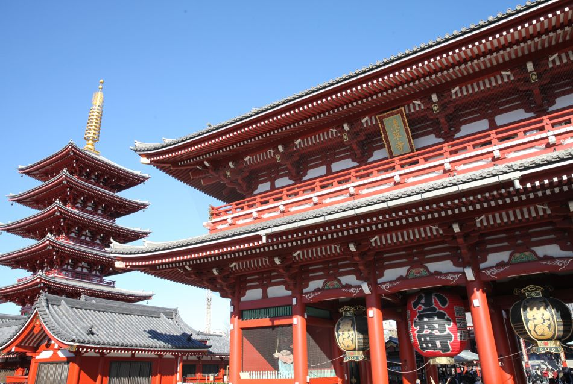
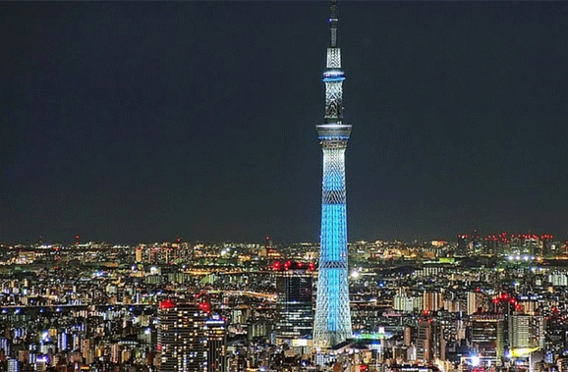

도쿄

일본에서 가장 유명한 도시인 도쿄. 도쿄도 도심부는 23구로 구성돼 있으며, 그 인구는 약 3,500만 명에 이른다. 세계에서 가장 바쁜 교차로로 알려진 도쿄 시부야의 ‘스크램블 교차로’는 한 번에 파란 신호를 건너는 사람이 약 3,000명을 넘어선다는 이야기도 있을 정도이며, 하루당 통과 인원이 50만 명에 달할 때도 있다고 한다.
또한 신주쿠역은 하루에 340만 명이 이용하는 세계에서 가장 혼잡한 철도역으로 알려졌다. 아키하바라는 오타쿠 문화의 중심지로 게임&애니메이션&만화 전문점이 즐비한 데다, 크고 작은 가전 판매점이 모여 일본 최대의 전기상가를 이루고 있다. 도쿄는 패션과 ‘가와이이’ 문화 유행의 발신지로 전세계에서 알려져 있는 한편, 유서 깊은 전통 문화의 흔적도 짙게 남아 있어 일년 내내 신사나 절 등에서 다양한 축제가 개최된다. 이처럼 도쿄는 옛날과 현재가 공존하는 도시다.
도쿄에는 일본 각 정부 부처, 천황이 기거하는 고쿄 등이 있다. 도쿄는 세계에서 제조업이 가장 발달한 도시이다. 또한 수많은 다국적 기업들이 도쿄에 본사 또는 지사를 두고 있으며, 세계의 게임산업, 만화와 애니메이션 산업, 영상, 디지털, 첨단산업 등의 중심지이다. 도쿄는 세계 최대의 지하철 교통망을 가지고 있으며, 세계에서 가장 큰 도시 광역권을 구성한다. 뉴욕, 런던과 함께 세계 3대 경제 수도로 불린다.
1. 도쿄 타워

도쿄 타워는 는 일본 도쿄도 미나토구에 있는 높이 333m의 종합 전파탑이다. 빨간색(또는 국제 표준 오렌지색)과 하얀색이 교차하여 도장되어 있다. 주소는 도쿄 도 미나토 구 시바코엔 4-2-8이다.
도쿄의 상징이자 관광 명소로서 널리 알려져 있다. 한동안은 일본 도쿄도에서 가장 높은 건축물이었으나, 2012년 근처에 634m의 도쿄 스카이 트리가 건설되면서 두 번째로 높은 건축물이 되었다. 일본 최고층 마천루인 오사카 아베노바시 터미널 빌딩(60층, 300m)보다 33m가 더 높다.
지상 150m 지점에 전망대가 설치되어 있으며 가격은 성인 기준 1200엔이다. 주말, 휴일 등에는 11시부터 1층에서 전망대까지 걸어서 올라갈 수도 있는데 걸어서 올라가면 인증서를 준다고 한다.
전망대에 오르면 도쿄 도내가 한눈에 내려다보이는데, 날씨가 좋을 때는 서쪽의 후지산(山), 북쪽의 쓰쿠바산(山), 남쪽의 요코하마까지 바라볼 수 있다. 타워 아래 부분인 5층 건물 풋타운(foot town) 에는 도쿄 원피스 타워, 수족관, 근대과학관, 쇼핑 아케이드 등 위락 시설이 마련되어 있다.
2. 롯폰기 힐즈

롯폰기 힐스는 일본 도쿄도 미나토구 롯폰기에 위치한 복합시설이다. 이 복합시설은 롯폰기힐즈 모리타워를 중심으로 하고 있다. 17년이 걸린 롯폰기 6가의 재개발 사업의 하나로서, 모리빌딩사가 이 복합시설을 건축하였다.
주요 시설로는 골드만삭스, 리만 브라더스 홀딩스, J-WAVE, Yahoo!Japan, 라이브도어, 라쿠텐 등의 기업들이 있으며, 모리미술관 등 문화시설이 들어와 있는 모리빌딩의 롯폰기힐즈 모리타워, TV아사히 본사, 도쿄그랜드하얏트호텔, 복합영화상영관(도호 영화사 롯폰기힐즈), 야외이벤트공간(롯폰기힐즈 아레나), 주거공간(롯폰기힐즈 레지던스, 게이트타워 레지던스 등), TSUTAYA와 루이비통 등을 비롯하여 다양한 쇼핑공간과 부띠끄, 레스토랑 등이 있다. 또한 미국인을 대상으로 한 국제학교인 American School in Japan 병설유치원이 있다.
7층부터 48층까지이다. 과거 야후 재팬, 코나미 등의 일본의 대기업들도 이 곳을 본사로 쓸 정도로 대표 고급 오피스로 유명했으나, 지금은 2007년 미드타운 타워가 완공되면서 다소 움츠러든 상태였지만 현재는 골드만 삭스, 애플, 구글 같은 회사들이 들어와있다. 포켓몬 컴퍼니도 이 건물에 위치해있다
또한, 롯폰기힐즈 모리타워에는 J-WAVE의 비상용 송신설비가 마련되어있어 도쿄타워에서 송신이 불가능하게 되어도 최대 1킬로와트 분량의 방송이 가능하다.
3. 메이지 신궁

일본 도쿄도 시부야구 요요기 구역에 위치한 신궁. 메이지 덴노와 쇼켄 황후 부부를 제신(祭神)으로 받든다.
신궁에서 동쪽으로 가면 메이지 신궁 야구장 옆에 메이지 신궁 외원(明治神宮外苑)이란 시설이 나온다. 메이지 천황이 사망했을 당시에는 군대의 연병장이었는데, 여기에 천황의 시신을 운구하여 장례식을 치른 이후로 메이지 천황을 기념하는 공원처럼 되었고, 메이지 신궁 창건 이후로는 신궁의 부속시설이 되었다.
일본에서 새해 첫 참배 스팟으로 유명한 곳으로, 하츠모데 풍경 등이 뉴스에 나올 때는 항상 이곳이나 가마쿠라의 모습이 나온다.
신사 내에는 와인과 청주가 가득 담긴 통들이 있다.청주는 신사 내 행사 때 쓰려고 각 양조업체에서 기증한 것들이고, 와인은 생전에 와인을 좋아한 메이지 덴노를 추모하기 위해 부르고뉴에서 기증받은 것들이다.
전통 결혼식 혼례장으로도 꽤 쓰인다. 일요일 오전 10시 혹은 11시에 가면 전통혼례식의 시작 혹은 끝을 볼 수 있다.
4. 센소지
일본 도쿄도 23구의 지명 중 하나. 관동 대지진으로 사라질 뻔 했으나, 현재는 복구되어 관광지이자 랜드마크로 유명하다. 특히 일본의 "시타마치(下町)의 정서, 서민 동네 분위기를 즐길 수 있는 곳이다. 센소지라는 절이 유명하며, 센소지의 정문에 걸린 크고 아름다운 붉은 등이 트레이드 마크다.
거리를 걷다 보면 기모노나 유카타를 입은 사람들이 많이 보이고 간혹 게이샤, 마이코나 오이란 분장을 한 사람들도 보이는데, 주변에 기모노나 유카타를 입어보거나 게이샤, 마이코, 오이란 분장 체험을 해볼 수 있는 가게들이 많기 때문이다. 남자들은 보통 남성용 기모노나 사무라이 분장을 많이 하는데, 보수적인 교토와는 달리 남자들의 여장 체험에 대해서도 대체로 관대한 편이다. 보통 가게들에서 옷을 갈아입고 가게 내 스튜디오에서 사진을 찍고, 추가 비용을 내면 근처 센소지나 주변을 걷거나 인력거를 타며 외출해볼 수 있다. 신발 또한 일본식 게다로 갈아신는다.
매년 7월 넷째 주 토요일에는 아사쿠사 동쪽에 있는 스미다 강에서 스미다강 불꽃대회가 펼쳐진다. 스미다강 불꽃대회는 일본을 대표하는 불꽃놀이 행사 중 하나로 널리 알려져 있으며, 이 축제가 열리는 동안 아사쿠사 전체와 도쿄 스카이트리는 인파로 가득 찬다. 단, 7월 넷째 주 토요일에 비가 올 경우 그 해의 불꽃놀이는 취소된다.
가까운 곳에는 도쿄 스카이트리가 있는데 아사쿠사를 거닐다 보면 보인다. 반대로 도쿄 스카이트리에서도 센소지가 아주 잘 보인다. 입구에 있는 노점에서 닌교야키라는 작은 빵을 파는데, 델리만쥬와 비슷한 빵이다. 차이점은 델리만쥬는 옥수수 모양인 반면 닌교야키는 사람 모양인 점, 닌교야키 속에는 커스터드 크림이 들어 있지 않다는 점이다.
5. 스카이 트리
일본 도쿄도 스미다구에 있는 전파 송출용 탑이다. 600m를 훌쩍 넘는 높이이다. 350m 전망대에 레스토랑, 가게 등의 시설이, 450m 특별전망대가 존재한다. 참고로 350m 전망대에서 한층 내려가면 340m 전망대가 있는데, 몇몇 곳에서 유리로 된 공중복도를 설치하여 공중을 걷는 듯한 체험을 할 수 있다고 한다.
직접 방문해보면 공중복도는 아니고 그냥 2군데 정도 바닥에 투명한 창을 설치해두었는데 하나는 일반 관객 전용, 또 하나는 촬영 전용으로 줄을 서면 직원이 사진을 자체 카메라 및 원하는 손님의 경우 손님의 스마트폰으로 사진을 찍어준다. 자체 카메라로 찍은 사진은 추후에 구입해도 되고 안해도 된다. 그리고 바닥의 투명창은 그 아래 다른 구조물이 겹겹이 막혀있어 그 개방감은 의외로 크지 않다.
지하에는 스미다 아쿠아리움이라는 작은 아쿠아리움이 붙어있는데, 말 그대로 정말 작은 아쿠아리움인지라 큰 기대는 하지 않는 것이 좋다. 그러나 물생활을 좀 하는 사람에게라면 이야기가 달라지는데, 세계적인 아쿠아스케이핑 업체인 ADA와 콜라보를 해서 수준급으로 스케이핑된 수조들을 볼 수 있어 매우 알차게 느껴진다.
6. 하마리큐 별궁 온시 정원

하마리큐 별궁 온시 정원은 중앙의 연못을 빙 둘러 건조물들이 세워져 있다. 연못 한가운데는 찻집으로 일년 내내 편안하게 녹차를 마실 수 있다. 이 정원의 연못은 바다로 이어져 있어 조수간만에 따라 바닷물이 들어왔다 나갔다 하기 때문에 항상 유동적이다.
도심 한가운데 위치한 것에 비해 제법 규모가 큰 편이다. 여려 종류의 식물과 동물이 살고 있으면 공원 내의 호수가 정취를 더해준다.
정원 전체에 매화와 벚꽃 나무들이 심어져 있어 봄이 되면 꽃이 활짝 핀다. 10월 하순부터 11월 중순에 걸쳐 절정을 맞이하는 단풍도 볼거리 중 하나이다.
하마리큐 별궁 온시 정원은 1946년 4월에 일반 공개되었지만, 그 이전까지는 수세기 동안 고관대작이나 왕실의 별장으로 사용되었습니다. 이 정원은 11대 장군 도쿠가와 이에나리의 지휘 아래 완성되었다. 1868년의 메이지 유신 이후 1945년 도쿄도에 하사될 때까지는 왕실의 별궁이었다.